Billet individuel
250 $
Joignez-vous à nous pour une soirée inoubliable de célébration culturelle, de gastronomie, de divertissement et de rencontres enrichissantes.
Acheter un billet
18 Years: Rooted, Standing Firm, Rising
Une célébration de l’excellence noire. Un héritage communautaire. Un avenir rempli de possibilités.
Joignez-vous au Centre de santé communautaire TAIBU pour Teranga Noir, notre tout premier gala-bénéfice, qui célèbre 18 années consacrées à faire progresser la santé des personnes noires, à renforcer le pouvoir d’agir des communautés et à créer des espaces où l’excellence noire s’épanouit.
Ancré dans l’esprit de l’hospitalité africaine, de la générosité et de l’appartenance, Teranga Noir est bien plus qu’une soirée élégante. C’est une célébration des personnes, des histoires et de la force collective qui ont façonné notre parcours, et une invitation à investir dans les générations à venir.
L’expérience
Teranga Noir : là où donner crée un impact, et où recevoir devient une célébration de l’excellence noire.
Teranga Noir réunit des leaders communautaires, des acteurs et actrices du changement, des artistes, des philanthropes et des visionnaires pour une soirée inoubliable qui honore la richesse de la culture noire, célèbre l’excellence noire et embrasse l’esprit de donner et de recevoir.
Fondé sur la conviction que la générosité est une expérience collective, Teranga Noir réinvente l’esprit du don en conviant les invités à donner avec intention et à recevoir en retour une expérience extraordinaire. Grâce à des prestations captivantes, à des récits puissants, à une expression culturelle riche et dynamique et à une expérience gastronomique raffinée, les invités seront plongés dans une soirée qui célèbre le talent, la créativité et les réalisations des personnes noires.
En vivant une soirée inoubliable placée sous le signe de la culture, des liens et de l’inspiration, les invités voient leur générosité dépasser le cadre de la célébration : elle soutient le travail continu du Centre de santé communautaire TAIBU pour faire progresser la santé, le bien-être et la prospérité collective des personnes noires.
À l’occasion de Mardi je donne, votre générosité profite à la communauté et, en retour, vous vivez une expérience qui mérite d’être célébrée.
L’heure
Ouverture des portes à 18 h
Début du programme à 19 h
La tenue
Tenue de soirée
Rouge, noir et or. Les tenues africaines d’apparat sont à l’honneur.
Une soirée. Une communauté. Un héritage durable.
Prenez part à la célébration
Vivez une soirée où la culture noire, la communauté et la philanthropie se rencontrent pour célébrer un héritage commun.
250 $
Joignez-vous à nous pour une soirée inoubliable de célébration culturelle, de gastronomie, de divertissement et de rencontres enrichissantes.
Acheter un billet2 500 $
Réunissez vos collègues, vos amis, votre famille ou votre communauté pour une expérience partagée qui célèbre l’excellence tout en investissant dans un impact durable.
Acheter une tableLa signification de Teranga Noir
En wolof, la Teranga incarne l’esprit d’hospitalité, de générosité et d’appartenance. C’est la conviction qu’une véritable communauté se bâtit non seulement par ce que nous donnons, mais aussi par ce que nous recevons les uns des autres.
Noir représente la beauté, l’éclat, la résilience et le raffinement de l’identité noire.
Ensemble, Teranga Noir exprime qui nous sommes et ce en quoi nous croyons : lorsque nous investissons les uns dans les autres, nous nous élevons tous.
À TAIBU, cette philosophie guide notre travail depuis 18 ans. Chaque geste de soin, chaque ressource partagée et chaque occasion créée s’inscrivent dans un cycle plus vaste de bien-être collectif.
Teranga Noir vous invite à prendre part à ce cycle.
Nous donnons. Nous recevons. Nous nous élevons ensemble.


Faites défiler pour découvrir d’autres photos

18 ans d’impact
Depuis 18 ans, le Centre de santé communautaire TAIBU est un pilier des services de santé et de mieux-être afrocentriques et culturellement adaptés offerts aux communautés africaines, caribéennes et noires de la région du Grand Toronto.
Notre travail repose sur une conviction simple, mais puissante : nos communautés méritent des soins qui honorent leur identité, comprennent leur vécu et leur donnent les moyens de s’épanouir.
De la santé mentale à l’autonomisation des jeunes, en passant par la prévention des maladies chroniques, la sécurité alimentaire, l’intervention en situation de crise et le mieux-être des aînés, TAIBU continue de lever les obstacles, de tisser des liens et de faire progresser l’équité en santé.
Nos racines sont profondes. Nos fondations sont solides. Et notre vision de l’avenir est plus ambitieuse que jamais.
18 ans de service. D’innombrables personnes accompagnées. Un héritage qui continue de s’écrire.
Le pouvoir de votre don
Au cœur de Teranga Noir se trouve la conviction que la générosité n’est jamais à sens unique.
Lorsque vous donnez, vous faites partie de quelque chose de plus grand. Vous créez des occasions de guérison, renforcez les liens communautaires et contribuez à ce que des soins culturellement adaptés demeurent accessibles à celles et ceux qui en ont le plus besoin.
Et en retour, vous recevez quelque chose d’aussi précieux : une soirée inoubliable de célébration, de rencontres et de culture, et la certitude que votre générosité crée un changement durable.
À l’approche de Mardi je donne, Teranga Noir réinvente ce que signifie donner.
Car le plus beau fruit de la générosité, c’est une communauté plus forte.
Votre participation aide TAIBU à continuer de :
Votre présence est un cadeau. Votre don est un investissement.
Un partenariat porteur de sens
Teranga Noir offre aux organisations et aux partenaires communautaires l’occasion de se tenir aux côtés de TAIBU pour faire progresser l’équité en santé des personnes noires et célébrer l’excellence noire.
En tant que commanditaire, vous ne soutenez pas simplement un événement. Vous investissez dans un mouvement qui reconnaît l’importance de la représentation, des soins culturellement adaptés et de la transformation portée par les communautés.
Ensemble, nous pouvons renforcer les fondations de la santé et du bien-être des personnes noires tout en créant des liens significatifs entre les organisations, les leaders et les communautés que nous servons.
10 000 $
5 000 $
Associez votre marque à une mission. Investissez dans un héritage d’impact.
Comment s’y rendre
Le lieu
585, rue Dundas Est
Toronto (Ontario) M5A 2B7